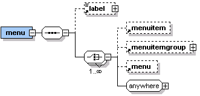

XDIME provides a number of elements that you can use to create menus. Menu layouts are flexible; you can nest menus and can associate menu, menuitemgroup, and individual menu elements with specific panes in a layout using the pane attribute. You can also combine menus with spatial or temporal iterators, and bind the contained menuitems to the generated panes to improve the dynamics of menu creation.
The figure shows the content model for the menu element.

The menu element should appear at top-level, inside the canvas element. If it is used inside a pane element, the output order of the menu and other elements in the pane may be incorrect.
A menu element has no text content; rather the label element contains the text description.
Note: The type attribute is deprecated. You should use style properties to define the menu type.
<menu pane="p1" class="newmenu"> <label>Main Menu</label> <menuitem href="home.xml" text="Home"/> <menuitem href="specials.xml" text="Special Offers"/> </menu> <menu> <label>Systems</label> <menuitem href="largesys.xml" text="Large Systems"/> <menuitem href="medsys.xml" text="Medium Systems"/> <menuitem href="smallsys.xml" text="Small Systems"/> </menu> <menu> <menuitem href="components.xml" text="Components"/> <menuitem href="buying.xml" text="Buy"/> </menu>
The menuitem element defines individual items. It must have href and text attributes. You should also specify the pane attribute; otherwise the content will appear in the pane that is bound to the containing menu.
In the attributes you can define a fixed image component and/or a rolloverImage component for the menuitem, and use themes to distinguish their use in different devices.
Note: You should use CSS properties to replace the deprecated onColor and offColor attributes.
In the next example the menu will be formatted with rollover images. When the pointer moves over the first prize item it will show the image component 'bmw.mimg, and the second prize item will show 'cruiship.mimg'.
<menu pane="menupane" title="Prizes"> <label>Prizes</label> <menuitem text="1st Prize - New BMW" href="firstprize.xml" offImage="bullet.mimg" onImage="bmw.mimg"/> <menuitem text="2nd Prize - Mediterranean Cruise" href="secondprize.xml" offImage="bullet.mimg" onImage="cruiseship.mimg"/> </menu>
You can use the menuitemgroup element to wrap similar items.
Related topics
Working with XDIME
Styling menus
menu